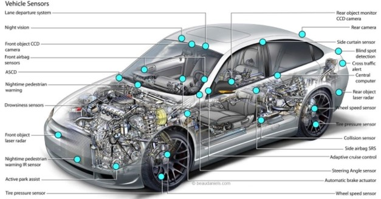
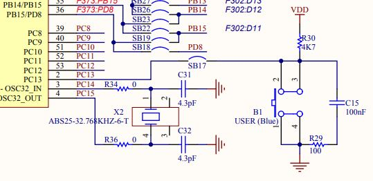

Microcontroller (µC)
Table of Contents
Généralités
 Un microcontroller (µC) est une puce programmable en C ou C++ pour la majorité des cas.
En première approche, on peut voir cette puce comme un micro ordinateur, car elle intègre non seulement une unité de calcul (micro processeur), mais egalement des périphériques.
Comme de la mémoire FLASH (program memory), mémoire RAM (data memory), convertisseur (NA ou AN), controller de bus…
Ces périphériques sont reliés via un bus interne, décris ci desssous comme un bus système.
Un microcontroller (µC) est une puce programmable en C ou C++ pour la majorité des cas.
En première approche, on peut voir cette puce comme un micro ordinateur, car elle intègre non seulement une unité de calcul (micro processeur), mais egalement des périphériques.
Comme de la mémoire FLASH (program memory), mémoire RAM (data memory), convertisseur (NA ou AN), controller de bus…
Ces périphériques sont reliés via un bus interne, décris ci desssous comme un bus système.

Du fait que tout soit intégré dans une puce, les microcontroller sont compacts, économes en énergie et donc tout désigné pour être embarqué. La plupart du temps le µC va s'interfacer avec des capteurs dont le rôle est de capter des grandeurs physiques. En général, les variations de ces grandeurs physiques feront varier une resistance, une capacité ou inductance qui au final pourra être convertie en tension (ou en courant), et donc exploitable par le µC.
| Capteurs | Grandeur physique |
|---|---|
| Bouton | Pression |
| Potentiometre | Angle |
| Thermoresistance | Temperature |
| Photodiode | Lumière |
| … | … |
De là, il pourra réaliser un traitement et des actions, via des actionneurs auquels il est également interfacé.
| Actionneurs |
|---|
| LED |
| Servomoteur |
| Moteur |
| Ecran |
| … |
Dans d'autre configurations, le µC et les capteurs forment un sous système intégré dans un système plus large. Ce sous système n'effectue aucune action à part renvoyer ses données à un autre sous sytème. Par exemple dans une automobile, en IOT ou en robotique.

En général le µC se trouve sur une carte électronique où l'on pourra trouver le minimum pour travailler comme des boutons, des LEDS et des connecteurs… La plus connues de ces cartes est la carte ARDUINO UNO, architecturée autour d'un µC ATmega328P.
Carte d'évaluation Nucleo
Il existe une grande variété de constructeur et de gammes. En général, le choix d'un micro controller se fait en fonction des taches qu'il aura à accomplir et des contraintes en terme de coûts, de consommation, de l'ergonomie de l'interface de développement…
Nous utiliserons une carte d'évaluation du constructeur ST Microelectronics. Cette carte d'évaluation est issue de la gamme Nucleo.


Voici les documents relatifs à la carte d'évaluation Nucleo STM32L476RG
LED (Utilisateur)
Hardware

Bouton Poussoir (Utilisateur)
Hardware

Le microcontroller
Caractéristiques
| Board | Nucleo STM32L476RG | Arduino Uno |
|---|---|---|
| Family | ARM Cortex-M4 | ATMega 328P |
| Vendor | ST Microelectronics | ATMega |
| Vcc | 1.71 V - 3.6V | 3.3 - 5V |
| Bus size | 32 bits | 8 bits |
| SRAM | 128 KB | 2 KB |
| Flash | 1 MB | 32 KB |
| Frequency | up to 80MHz | 16 |
| FPU | YES | NO |
| Timers | 16 | 3 |
| ADCs | 1x 12-bit | 6 (10 bits) |
| DAC | 1 | 1 |
| UARTs | 3 | 1 |
| SPIs | 3 | 1 |
| I2Cs | 3 | 1 |
| RTC | 1 | 0 |
Architecture
Voir page 17 de la datasheet

CubeIDE: Configuration du projet

CubeIDE: Configuration et utilisation des périphériques
NomDuProjet.ioc
La première étape avant d'utiliser un périphérique est de le configurer. Ceci ce fait via une interface graphique. Cette interface génère infine du code.
HAL (Hardware Abstraction Layer)
Nous utiliserons les fonctions HAL incluent dans l'environnement de développement. Elles permettent de simplifier le travail du développeur concernant l'utilisation, la configuration et l'initialisation des périphériques du microcontroller.
GPIO (General purpose Input Outpout.)
Ce sont les broches du micro controleur qui peuvent être utilisées comme entrée ou sortie selon leur configuration. On y branche typiquement une LED ou un bouton poussoir. Il y a 3 ports (A, B, C) comportant chacun 16 broches. Par exemple, PA8 est la 8e broche du port A. Il y a theoriquement 48 GPIO de disponible sur notre carte.
Drivers>STM32L4xxHALDriver>stm32l4xxhalgpio.h Ce fichier fournit par STMicro définit les masques derriere les alias GPIOPINX ainsi que toutes les fonctions relatives à l'utilisation des GPIO
Configuration
Afin de configuer les GPIO en entrée ou en sortie, ainsi que les assignés à certains périphériques (controler de bus, convertisseur, timer…):
- Clique gauche sur les broches pour les configurer en sorties ou en entrée
- Clique droit sur une broche pour lui donner un label
main.h
Les directives suivantes permettent de faire le lien entre les userlabel et les noms des broches
#define user_label nom_broche #define B1_Pin GPIO_PIN_13 #define LD2_Pin GPIO_PIN_5 #define D8_Pin GPIO_PIN_9
main.c
Cette fonction généré automatiquement configure les GPIO
static void MX_GPIO_Init(void)
Ecriture
void HAL_GPIO_WritePin(GPIO_TypeDef* GPIOx, uint16_t GPIO_Pin, GPIO_PinState PinState);
Exemple:
HAL_GPIO_WritePin(GPIOA, LD2_Pin, RESET);
void HAL_GPIO_TogglePin(GPIO_TypeDef *GPIOx, uint16_t GPIO_Pin);
Exemple:
HAL_GPIO_TogglePin(GPIOA, LD2_Pin);
Lecture
GPIO_PinState HAL_GPIO_ReadPin(GPIO_TypeDef* GPIOx, uint16_t GPIO_Pin);
Exemple:
PinState = HAL_GPIO_ReadPin(GPIOC, B1_Pin);
Délai
void HAL_Delay (uint32_t Delay);
L'argument entre parenthèse est un entier, qui est le temps en millisecondes. Exemple:
// Temporistion de 10 ms HAL_Delay(10);
RS232
Configuration
Si vous avez suivi l'étape de configuration de votre projet pour la carte d'évaluation Nucleo L476RG, la configuration de la liason série est déjà faite. C'est le rôle du Board Support Package (BSP) de faciliter la configuration logiciels des cartes du commerce. Dans notre cas, il s'agit d'une liaison "serial over USB". Le protocol série est utiliser au travers d'une connection USB. Vous pouvez éditer la configuration existante comme indiqué ci dessous (baudrate, checksum…)
Le code C généré par cette interface doit se retrouver dans le fichier uart.c, dont voici un extrait:
#include "usart.h" UART_HandleTypeDef huart2; void MX_USART2_UART_Init(void) { huart2.Instance = USART2; huart2.Init.BaudRate = 9600; huart2.Init.WordLength = UART_WORDLENGTH_8B; huart2.Init.StopBits = UART_STOPBITS_1; huart2.Init.Parity = UART_PARITY_NONE; huart2.Init.Mode = UART_MODE_TX_RX; huart2.Init.HwFlowCtl = UART_HWCONTROL_NONE; huart2.Init.OverSampling = UART_OVERSAMPLING_16; huart2.Init.OneBitSampling = UART_ONE_BIT_SAMPLE_DISABLE; huart2.AdvancedInit.AdvFeatureInit = UART_ADVFEATURE_NO_INIT; if (HAL_UART_Init(&huart2) != HAL_OK) { Error_Handler(); } /* USER CODE BEGIN USART2_Init 2 */ /* USER CODE END USART2_Init 2 */ }
Emission (µC vers PC)
HAL_UART_Transmit (UART_HandleTypeDef *huart, uint8_t *pData, uint16_t Size, uint32_t Timeout)
char uart_tx_buff[50]; int uart_tx_buf_len; uart_tx_buf_len = sprintf(uart_tx_buff, "Nucleo L476RG connected\n\r"); HAL_UART_Transmit(&huart2, (uint8_t*) uart_tx_buff, uart_tx_buf_len, 100);
Reception (PC vers µC)
HAL_StatusTypeDef HAL_UART_Receive(UART_HandleTypeDef *huart, uint8_t * pData, uint16_t Size, uint32_t Timeout )
Exemple:
HAL_UART_Receive(&huart2, uart_rx_buffer, 1, 10)
Convertisseur analogique-numérique
Configuration
Voici les principaux paramètres accessible via l'interface graphique (.ioc) de configuration:
- GPIO associé
- Résolution
- Fréquence d'échantillonnage
Utilisation
Exemple de fonction définie par l'utilisateur permettant de récupérer d'utiliser l'ADC:
int load_adc(ADC_HandleTypeDef hadc, int polTime) { HAL_ADC_Start(&hadc); HAL_ADC_PollForConversion(&hadc, polTime); return HAL_ADC_GetValue(&hadc); }
Exemple de projet avec CubeIDE
Tutoriels CubeIde
Prise en main
Exemple d'interface avec un capteur I2C
Compteur et interruption
Exercices
Pour les exercices suivant, vous pouvez vous aider de la fonction delay.
Exercice 1
Programmer la carte de façon à ce que la LED s'allume pendant 500ms puis s'éteigne pendant 1000ms de façon cyclique
Exercice 2
Programmer la carte de façon à ce que la LED s'allume lorsque l'on appuie sur le bouton et s'eteigne lorsque le bouton est relaché.
Exercice 3
Programmer la carte de façon à ce que la LED s'allume quand on appuie sur le bouton, reste allumé quand on le relache, puis s'éteint à la pression suivante.
Exercice 4
Envoyer votre prénom via l'UART toute les secondes, vérifier avec votre PC (via un terminal série)
Exercice 5
Programmer la carte de façon à ce que l'intensité de la luminosité de la LED augmente puis diminue jusq'à complètement s'éteindre, et cela de façon cyclique (période d'une seconde)